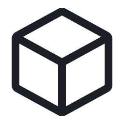
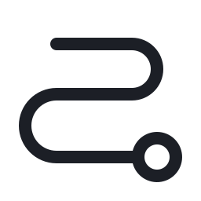
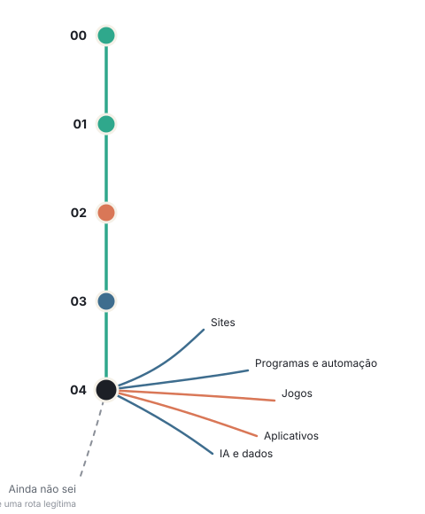

Quem quer começar
- Nunca programou;
- Tentou e ficou perdido;
- Quer criar algo, mas não sabe qual ferramenta usar;
- Ainda não sabe o que quer criar.
Rota Zero Zero
Você quer começar em programação ou ajudar alguém a começar, mas não sabe por onde? A ROTA ZERO ZERO ajuda a transformar interesse em um primeiro projeto e a descobrir o próximo passo.
Sem precisar escolher um curso ou uma linguagem logo de início.
A dúvida inicial
Quando surge o interesse por programação, a primeira reação costuma ser procurar a melhor linguagem ou o melhor curso. Essa escolha pode vir cedo demais.
O princípio central
Entender o que despertou a curiosidade.
Imaginar algo pequeno para criar.
Escolher a ferramenta que serve ao projeto.
A tecnologia entra para servir ao projeto. Não o contrário.
Como funciona
A progressão depende de interesse, experiência e prontidão. Não de completar etapas por obrigação.
O que chamou atenção? Um jogo, um site, uma pergunta sobre como algo funciona.

Uma experiência curta e concreta, com espaço para tentar e errar.
Quem está aprendendo tentou de novo? Modificou algo? Conseguiu explicar o que fez? Isso ajuda a decidir o próximo passo.

Repetir, avançar ou mudar de direção: as três saídas fazem parte da rota.
O mapa

Experimentar e observar que tipo de curiosidade pode virar criação.
Dividir uma ideia em partes antes de escolher qualquer ferramenta.
Construir com blocos e testar ideias com retorno rápido.
Levar o raciocínio para instruções escritas, no ritmo certo.
Definir a tecnologia a partir do projeto que se deseja construir.
O mapa organiza decisões. Não substitui a observação. “Ainda não sei” também é uma rota legítima — pausar ou explorar faz parte do começo.
Para quem
A rota é de quem aprende. A orientação também serve para quem caminha ao lado.
O que importa
Assistir pode ajudar. Mas a aprendizagem fica mais visível quando quem aprende consegue modificar uma ideia, testar o resultado e explicar o que tentou.
Transformar uma ideia em algo que funciona.
Alterar uma regra com intenção e ver o efeito.
Comparar o que se esperava com o que aconteceu.
Contar o que tentou e o que aprendeu no caminho.
O produto fundador
O Roadmap organiza experiências, rotas, recursos e critérios para famílias que querem acompanhar esse começo com mais clareza.
Conheça o RoadmapO próximo passo
Precisa apenas de um próximo passo que faça sentido agora.
O diagnóstico ROTA ZERO ZERO fará algumas perguntas sobre interesse, experiências e o que você ou o jovem gostaria de criar. Ao final, indicará um ponto de partida provável.
Descubra seu próximo passo